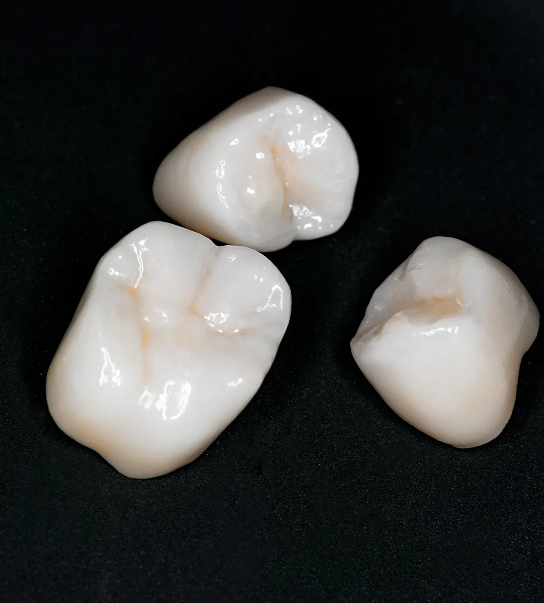
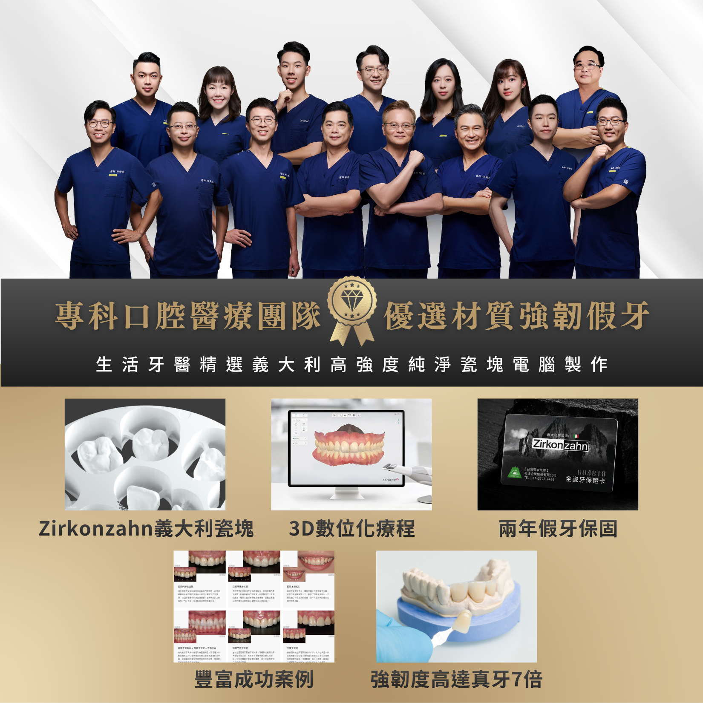

療程項目
全鋯冠Zirconia Crown
後牙假牙冠首選的耐咬材質
全鋯冠以二氧化鋯陶瓷製作，具備高強度、無金屬與自然色澤等特色，適合需要耐咬、穩定且兼顧美觀的牙冠修復。
25+
年臨床經驗
7000+
成功修復案例
2
年安心保固

療程介紹
了解全鋯冠，選擇合適治療
全鋯冠以二氧化鋯陶瓷製作，具備高強度、無金屬與自然色澤等特色，適合需要耐咬、穩定且兼顧美觀的牙冠修復。
生活牙醫會依照每位患者的口腔條件、期待、預算與長期維護需求，安排完整檢查與醫師說明。療程開始前會先釐清適合對象、可能限制與替代方案，讓治療計畫更透明。
實際治療方式與時間會因牙齒狀況、牙周健康、咬合、生活習慣與全身病史而異，建議以現場醫師診斷為準。

高強度耐用
適合後牙區或咬合力較大的牙冠修復需求
自然色澤
可依鄰牙顏色與口腔條件調整外觀表現
無金屬結構
降低金屬邊緣外露或牙齦暗沉的疑慮
精密密合
搭配數位掃描與技工製作，提升邊緣貼合度
生活牙醫的優勢
高強度瓷塊電腦製作
全鋯冠著重強度與穩定度，生活牙醫以義大利瓷塊、3D 數位流程與案例經驗規劃耐用修復。

專科口腔醫療團隊
由醫師評估牙位、咬合與剩餘齒質，判斷是否適合高強度全鋯冠修復。
義大利高強度瓷塊
採用 Zirkonzahn 義大利瓷塊，適合需要承受較高咬合力的位置。
3D 數位化療程
以數位資料溝通牙冠形態、咬合與邊緣密合，提升製作品質。
強韌度高達真牙 7 倍
全鋯材質強度高，常用於後牙或咬合力較大的假牙修復。
豐富成功案例
累積不同牙位與咬合條件的修復案例，協助患者理解治療方向。
兩年假牙保固
完成後提供保固與追蹤，定期檢查咬合、清潔與假牙使用狀況。
療程流程
從評估到穩定追蹤
每個療程都會先確認口腔基礎條件，再依診斷結果安排合適步驟與回診節奏。
口腔檢查
確認全鋯冠需求、病史與口腔狀況，先建立治療方向。
數位掃描或取模
收集影像、掃描或口腔紀錄，讓醫師能更完整判斷。
牙齒修型與臨時牙
依檢查結果說明治療方式、期程、限制與替代方案。
技工製作全鋯冠
依計畫執行治療，過程中持續確認舒適度與穩定度。
試戴調整與黏著
完成後安排清潔照護與回診追蹤，維持長期成果。
材質比較
為何選擇全鋯冠

|

|

|
|
|---|---|---|---|
| 比較項目 | 全鋯冠最推薦 | 全瓷冠 | 金屬烤瓷冠 |
| 美觀透光性 | ◎ 稍微透光 | ◎ 最佳透光 | ● 牙齦易黑線 |
| 強度耐用度 | ◎ 特高（後牙為主） | △ 中 | △ 中 |
| 生物相容性 | ◎ 極佳 | ◎ 極佳 | △ 金屬過敏風險 |
| X光透視 | ◎ 可清楚檢查 | ◎ 可清楚檢查 | ✕ 金屬遮蔽 |
| 適用位置 | 後牙最佳 | 前牙最佳 | 前後牙 |
常見問題
全鋯冠療程FAQ
整理諮詢時常見的問題，協助您在看診前先掌握基本方向。
牙釘或牙柱主要用來增加牙齒核心結構的支撐，常見於根管治療後齒質剩餘較少的牙齒。全鋯冠多用於後牙或咬合力較大的位置，為了承受後牙咬合力，幾乎都需要製作牙釘；實際仍會由醫師依剩餘齒質、咬合力量與修復範圍評估。
台中生活牙醫全鋯冠費用為 18000 元。實際療程仍會依牙齒位置、修復難度、是否需要牙釘或其他前置治療而不同，建議先由醫師檢查口腔狀況與需求後，再提供完整報價。
生活牙醫提供假牙 2 年保固，完成後也會說明使用與清潔方式，並建議定期回診追蹤，讓假牙維持穩定與長久使用。
差異通常來自醫師的修磨與黏著技術、數位掃描與設計流程、技工所製作品質、陶瓷材質選擇，以及顏色與形態調整的細緻度。好的全鋯冠不只看材質，也看整體診斷、設計與製作流程。建議選擇能證明瓷塊來源、有實際案例供參考、提供術後保固的醫療院所來製作，療程更有保證。
牙醫知識
關於全鋯冠，你該知道的事
整理諮詢時常見的問題，協助您在看診前先掌握基本方向。
立即諮詢全鋯冠
歡迎預約諮詢，由醫師一對一親診為您規劃療程，讓我們一起打造最符合需求的治療方案